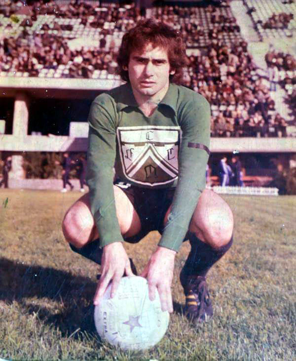
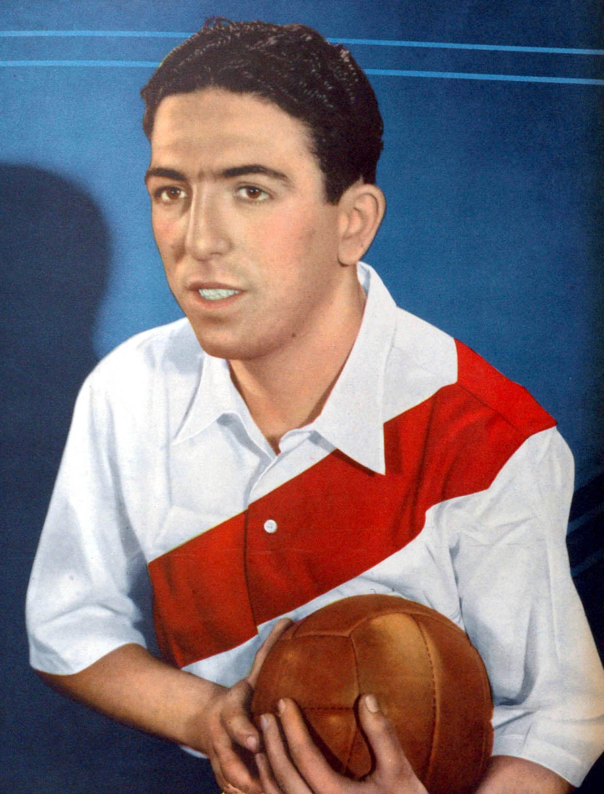
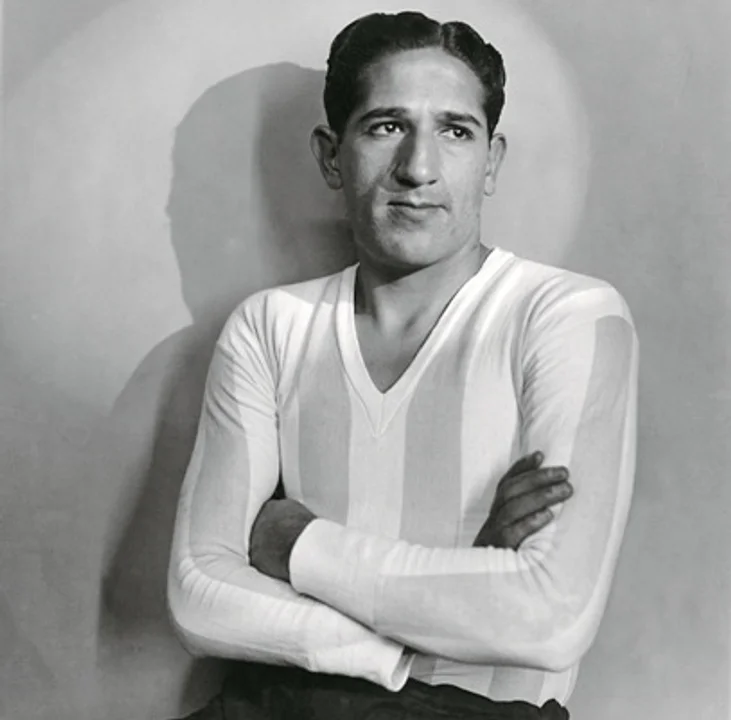

Estos son algunos de los goleadores de cada equipo profesional
Ferro Carril Oeste
El máximo goleador histórico de Ferro Carril Oeste es Carlos Alberto "Goma" Vidal, quien anotó 108 goles
con la camiseta verdolaga
Fundación: Nació el 28 de julio de 1904 en el barrio porteño de Caballito,
impulsado por 95
empleados de la compañía Ferrocarril del Oeste (actual Ferrocarril Sarmiento).
Estadio: En 1905 se instaló en sus terrenos históricos de Avellaneda y Martín
de Gainza,
siendo el único club afiliado directamente a la AFA que mantiene su estadio en el mismo lugar desde
su fundación.

Boca juniors
El máximo goleador en la historia del Club Atlético Boca Juniors es Martín Palermo, quien anotó 236 goles
en 404 partidos oficiales.
Fundación: el 3 de abril de 1905 en el barrio porteño de La Boca, Buenos Aires,
por cinco jóvenes
hijos de inmigrantes italianos (de origen genovés): Esteban Baglietto, Alfredo Scarpati, Santiago Sana y
los hermanos Teodoro y Juan Antonio FarengaEstadio: su histórico estadio, oficialmente llamado Alberto J. Armando, fue
inaugurado en 1940 y es
famoso por su característico diseño en forma de "d, con una tribuna vertical que "tiembla" con el
aliento de la hinchada
River Plate
El máximo goleador en la historia de River Plate es Ángel Labruna con 317 goles.
Fundación: el 25 de mayo de 1901 en el barrio de La Boca, tras la fusión de dos
clubes locales
llamados Santa Rosa y La RosalesEstadio: tras estar en La Boca y Recoleta, el club compró terrenos en el barrio de
Belgrano/Núñez.
El Estadio Monumental (Antonio Vespucio Liberti) fue inaugurado el 25 de mayo de 1938

Racing
El máximo goleador en la historia de Racing Club es Alberto Ohaco, quien convirtió más de 200 goles
durante la época amateur del club
Fundación: el 25 de marzo de 1903 en Avellaneda (Buenos Aires), fruto de la unión
entre el Football
Club Barracas al Sud y el Club Atlético Colorados Unidos. Es reconocido por ser el primer equipo
argentino fundado íntegramente por criollos.Estadio: conocido popularmente como El Cilindro (oficialmente Estadio Presidente
Perón), está
ubicado en Avellaneda y fue inaugurado el 3 de septiembre de 1950

Independiente
El máximo goleador en la historia del Club Atlético Independiente es el paraguayo Arsenio Erico, quien
anotó 295 goles en torneos oficiales de liga (y más de 300 sumando todas las competencias)
Fundación: el 1 de enero de 1905 en Buenos Aires (y trasladado más tarde a
Avellaneda),
convirtiéndose en uno de los clubes más grandes e históricos del fútbol argentino y mundial.Estadio: Su estadio actual lleva el nombre de Libertadores de América - Ricardo
Enrique Bochini, en honor a su máxima gloria futbolística.